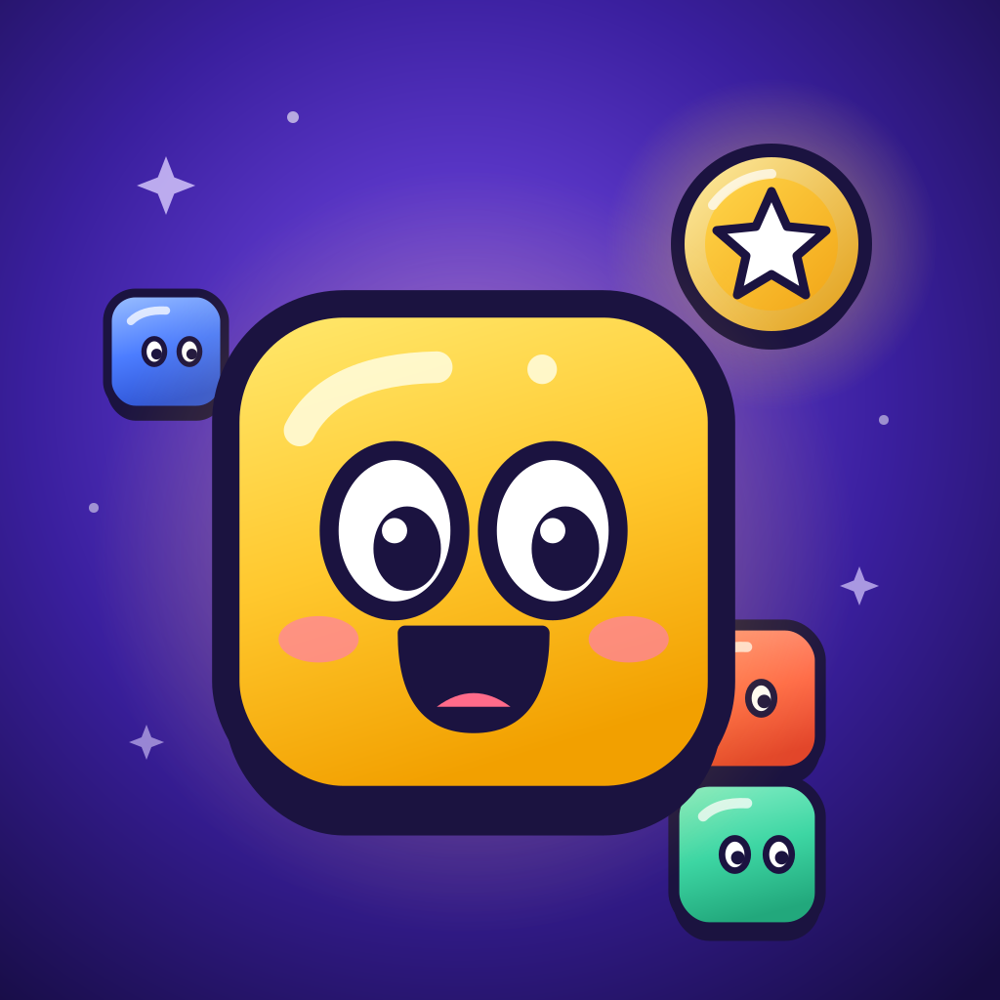

Gridolu – Presse
Das Block-Puzzle, das jeder spielen kann – auch blinde Menschen.
Fakten
| Name | Gridolu: Block-Puzzle |
| Entwickler | Chrizantus Nehring, Ittlingen (Baden-Württemberg) – Ein-Personen-Studio |
| Plattform | iPhone und iPad (iOS 17 oder neuer) |
| Erschienen | November 2026, weltweit in 175 Ländern |
| Sprachen | Deutsch, Englisch, Japanisch, Spanisch, Portugiesisch (Brasilien), Französisch, Koreanisch, Italienisch |
| Preis | Kostenlos; optional Gridolu Plus (einmalig, ohne Abo) und Schmuck-Pakete. Keine Lootboxen, kein Spielvorteil gegen Geld. |
| App Store | Im App Store laden https://apps.apple.com/app/id6827134157 |
In drei Sätzen
Gridolu ist ein gemütliches Block-Puzzle: Jelly-Blöcke aufs 8×8-Feld setzen, Reihen füllen, zusehen, wie sie platzen. Nach jeder Runde erzählt die Eule Ella die Partie als kleine Heldengeschichte – mit echter Stimme in acht Sprachen und als Video zum Teilen. Und Gridolu ist komplett mit VoiceOver spielbar, sodass auch blinde und sehbehinderte Menschen mitspielen.
English: Gridolu is a cozy block puzzle: place jelly blocks on an 8×8 board, fill the lines and watch them pop. After every round, Ella the owl tells your game as a little hero story – with a real voice in eight languages and as a video to share. And Gridolu is fully playable with VoiceOver, so blind and low-vision players can join in.
Was Gridolu besonders macht
- Blind spielbar: VoiceOver komplett, eigener Rotor „Passende Stellen“, Tippen statt Ziehen, Einhand-Modus, Farbzeichen.
- Ella erzählt: Jede Runde wird zur Heldengeschichte mit Stimme und Untertiteln.
- Feste aus aller Welt: Adventskalender, Laternenfest, Karneval, Kirschblüte, Ostereier-Suche, Sternenfest, Mondfest und Kürbisfest – mit einem gemeinsamen Welt-Ziel aller Spieler.
- Fair: Kaufen kann man nur Schmuck und Inhalte, nie einen Vorteil. Keine Leben, kein Energiesystem, spielbar ohne Internet.
- Mehr als Klassik: Abenteuer mit Runen, Weltkarte, Gridoku (Sudoku mit Jellys), Foto-Puzzle zum Verschicken, Tages-Challenge, Game Center.
Gerade aktuell: Gridos Adventskalender
Vom 1. bis 24. Dezember öffnet sich jeden Tag ein Türchen mit einem neuen Fest-Level. Alle Spieler weltweit arbeiten gemeinsam auf ein Welt-Ziel bis Heiligabend hin.
Bilder (frei für Berichte über Gridolu)


Kontakt
Chrizantus Nehring · support@gridolu.com
Promo-Zugang für Redaktionen auf Anfrage.